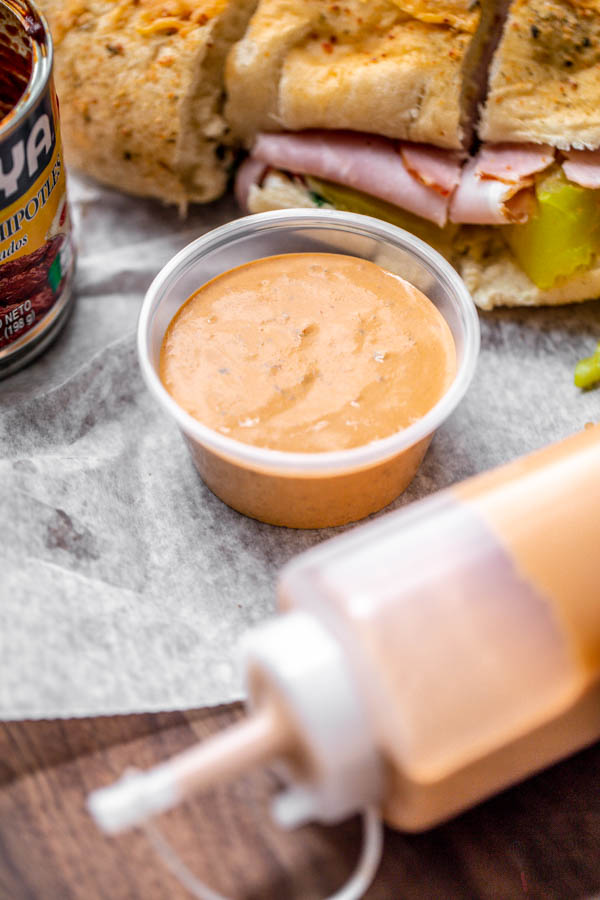

Subway Style Southwest Sauce

Yes, thats correct, you can now replicate your favourite subway sauce at home.
Ingredients
- 3/4 cup ranch dressing (Hidden Valley Original)
- 1/4 cup mayo
- 3.5 oz chipotle peppers
- 2 Tbsp white vinegar
- 1 tsp white sugar
- 1 Tbsp onion powder
- 1 tsp garlic powder
- salt and pepper to taste
Method
- Add all the ingredients into a food processor and blend until smooth.
- Season with salt and pepper to the desired taste.